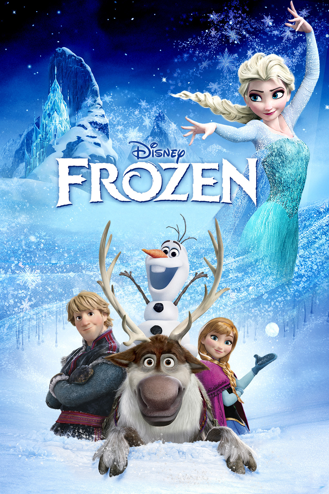
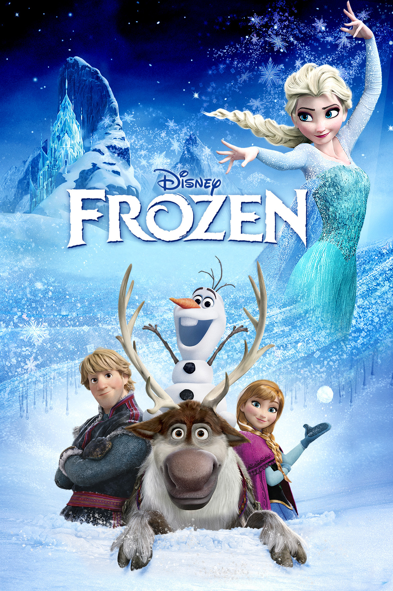

Here are the top 8 movie genres that are popular among audiences. Choose the one you like.
Action:
High-energy movies featuring physical stunts, chases, and battles.


Comedy:
Light-hearted films designed to amuse and entertain through humor.


Science Fiction (Sci-Fi):
Films that explore futuristic concepts, advanced technology, and space exploration.


Romance:
Films that center around love stories and romantic relationships.


Fantasy:
Movies set in fictional universes with magical elements and mythical creatures.
 
